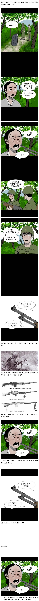

141 · 56 · 5 시간 전 · 원문

정보) 생시는 살아있은 시체를 말하는데.... 생전 인격은 있지만 조종자가 지시하면 따라움직이는 존재다.
수집 당시 댓글 6개
더블그라탕버거 · 3 시간 전
빨갱이는 아니지만 마녀였네!
깊고어두운환상 · 2 시간 전
콜오브듀티 생각나네 ㅋㅋ 개런드만 쓰다가 BAR이랑 톰슨 잡으니까 얼마나 좋던지
마키마의반죽교실 · 2 시간 전
??? : 제가 신컨이라 ㅎ
포도음료 · 57 분 전
여담인데 한국전쟁때 저 총 한자루로 고지점령한 이등병이 있었음
GB · 56 분 전
아 빨갱이는 아니었구나!
shipsaekki · 34 분 전
이거 진짜 숨은 명작임
댓글
수집 당시 댓글 6개
더블그라탕버거 · 3 시간 전
빨갱이는 아니지만 마녀였네!
깊고어두운환상 · 2 시간 전
콜오브듀티 생각나네 ㅋㅋ 개런드만 쓰다가 BAR이랑 톰슨 잡으니까 얼마나 좋던지
마키마의반죽교실 · 2 시간 전
??? : 제가 신컨이라 ㅎ
포도음료 · 57 분 전
여담인데 한국전쟁때 저 총 한자루로 고지점령한 이등병이 있었음
GB · 56 분 전
아 빨갱이는 아니었구나!
shipsaekki · 34 분 전
이거 진짜 숨은 명작임